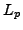
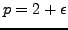

The neutron transport equation is used to describe the behaviour of neutrons in a heterogeneous, fission-capable medium as they move in a range of directions and energies. The efficient and accurate solution of this equation is vital in the field of nuclear reactor design and operation, amongst other areas. To this end, a variety of numerical methods have been developed over the past several decades. In particular, the use of the method of characteristics in various applications of the neutron transport equation has been common for some years now, and is now an established method in several leading commercial codes, including the CACTUS module in Serco Assurance's WIMS software. However, to date, no comprehensive study of the mathematical properties of this method has been undertaken.
In this talk we present an a priori error analysis for a fully discrete neutron transport problem on a two-dimensional plane, based on exploiting the method of characteristics in the spatial domain and the discrete ordinates technique for the discretization of the angular dimension. Here, the error in the scalar flux is measured in terms of the -norm, with  and . The underlying proof is based on a combination of the work undertaken by Johnson and Pitkäranta and general operator theory. Numerical examples demonstrating the practical performance of the proposed discretization method will be presented.